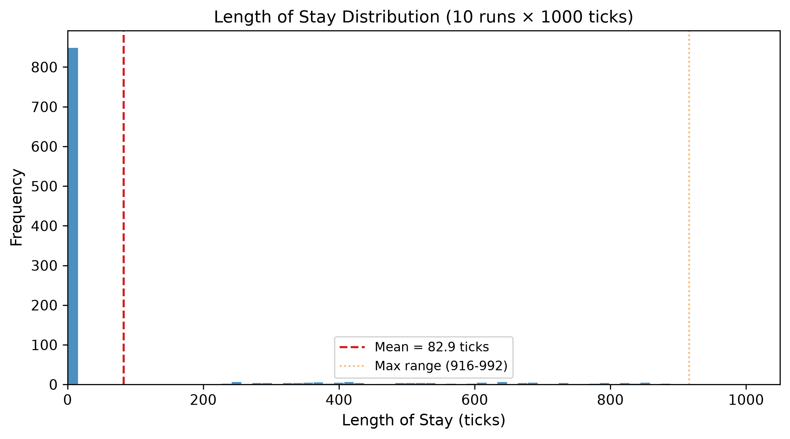
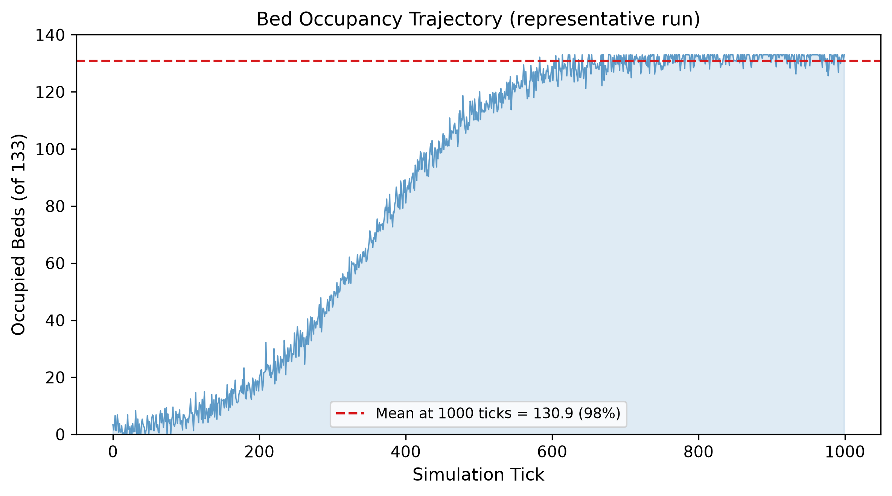

# Deer's Rock: A Persistent, Event-Driven Healthcare Simulation Platform
Authors: Riki Rinjani (Independent, ORCID: 0009-0002-9364-2637)
SoftwareX metadata
Healthcare simulation is essential for policy analysis, AI benchmarking, and health information system validation. Existing platforms such as SimPy, AnyLogic, and MedModel support discrete-event simulation but lack three properties that are essential for modern healthcare experimentation: persistent deterministic replay, modular composability of clinical departments, and agent-native experimentation within a single open-source framework.
Deer's Rock is a persistent, event-driven hospital simulation platform implemented in TypeScript (Node.js, ~8,000 source lines across 50+ modules) that models a full Tier A referral hospital in Makassar, Eastern Indonesia. The platform includes 9 specialized departments, 50 ICD-10 diagnoses, rule-based clinical agents (doctor, nurse, pharmacist), a 22-drug formulary, and a stochastic disaster scenario engine covering 7 event types. Unlike existing simulators, the calendar engine generates culturally-contextualized patient influx — Lebaran burn injuries, Ramadan fasting-related hypoglycemia — modelled from real Indonesian epidemiology.
The platform enables two key capabilities: deterministic seeding and snapshot persistence for controlled branching experiments (counterfactual replay), and an event-sourced journal that exposes the full decision trace of each simulation run, allowing modelling assumptions to be audited against outputs.
General-purpose simulation frameworks such as SimPy [1] and AnyLogic [2] have been widely applied to healthcare modelling. SimPy provides process-based discrete-event simulation in Python but lacks built-in support for deterministic replay, modular domain handlers, or healthcare-specific data models. AnyLogic offers multi-method simulation and has been applied to emergency department crowding [3] and operating room scheduling [4], but is proprietary and does not provide an event-sourced journal for reproducible replay. MedModel [5] is purpose-built for healthcare but is also proprietary. Synthea [6] generates synthetic patient records for health IT testing but does not simulate hospital operations or support agent-based experimentation.
Feature comparison. Table 1 compares Deer's Rock against existing platforms across dimensions relevant to healthcare experimentation.
| Feature | SimPy | AnyLogic | MedModel | Synthea | Deer's Rock |
|---|---|---|---|---|---|
| Open-source | Yes | No | No | Yes | Yes |
| Deterministic replay | No | No | No | N/A | Yes |
| Modular handler chain | No | Partial* | No | No | Yes |
| Healthcare-specific | No | Partial | Yes | Yes | Yes |
| Cultural patient generation | No | No | No | No | Yes |
| Rule-based clinical agents | No | No | No | No | Yes |
| Disaster scenario engine | No | Partial* | No | No | Yes |
| FHIR R4 adapter | No | No | No | Yes | Partial^ |
| Event-sourced journal | No | No | No | No | Yes |
Table 1. Comparison of Deer's Rock with existing simulation platforms. ^Currently implements Patient and Observation resource profiles; full HL7 FHIR R4 conformance testing is ongoing. *AnyLogic supports user-defined modular agent types and parameterized disaster inputs [2]; Deer's Rock provides these as built-in, prescripted modules.
Komorowski et al. [7] demonstrated reinforcement learning for sepsis treatment optimisation using retrospective ICU data, and Gottesman et al. [8] established guidelines for RL in healthcare. These approaches focus on isolated clinical tasks rather than full hospital operations. Healthcare digital twin initiatives such as the NHS DIGIT programme [9] and Siemens Healthineers [10] are organization-specific, tied to particular hospital data, and generally not open-source.
Deer's Rock is built on three architectural foundations: a deterministic tick engine, an append-only SQLite event journal, and a modular handler chain (Figure 1).

Figure 1. High-level architecture of Deer's Rock showing the tick engine, handler chain, event journal, and FHIR adapter. Handler subgraph includes admission, emergency, lab/pharmacy, doctor/nurse, disaster scenario, and cleanup/learn handlers.
Tick engine. The simulation advances at 1 tick per second real-time, where each tick represents 1 simulated minute. At this speed, 24 minutes of real time simulate one hospital day. The clock is the authoritative timekeeper — no module may advance or delay it. All random decisions use a seeded PRNG (mulberry32) initialized from the simulation seed, ensuring deterministic reproducibility.
Event journal. Every state transition is recorded in an append-only SQLite journal with WAL mode. Each entry captures the tick, timestamp, event type, entity, and a JSON payload. Full-state snapshots are serialized every 100 ticks, enabling replay from any checkpoint. The current state is a materialized view derived from the nearest snapshot plus subsequent journal entries, following the event sourcing pattern [14, 15].
Handler chain. Each tick processes state through a pipeline of 35 handler functions, each responsible for a specific domain (admission, outpatient, emergency, lab, pharmacy, nursing, doctor, radiology, surgery, blood bank, microbiology, pathology, CSSD, biomedical engineering, infection control, clinical nutrition, radiotherapy, dialysis, etc.). Handlers are pure functions that do not communicate directly — they share state only through the state object passed through the chain.
Patient generation and admission. A 50-diagnosis ICD-10 pool weighted for Tier A hospital admission patterns produces patient profiles with age-appropriate vitals, Indonesian identity data, blood type, and drug allergy probabilities. A Markov process evaluates bed availability, calendar event modifiers, and disaster surge multipliers every tick to determine admissions.
Rule-based clinical agents. Three agent types operate under deterministic clinical rules defined in code: the doctor rounds every 4 ticks, assigns specialists via 14-specialty ICD mapping, and generates clinical actions ranked by priority and historical effectiveness; the nurse monitors vitals and administers medications; the pharmacist reviews orders against drug allergies, contraindications, and dose ranges. Agents are rule-based, not learned, ensuring deterministic behaviour. The architecture supports swapping these for learned policies (RL, LLM) without changes to the handler chain.
Disaster scenario engine. Seven stochastic disaster types (earthquake, tsunami, pandemic, etc.) progress through four phases — ramping, sustained, recovering, resolved — affecting patient surge (2-7×), mortality, supply demand, staff availability, and infrastructure.
Cultural calendar engine. Patient influx patterns are tied to Indonesian holidays: Ramadan admissions for dehydration and hypoglycemia (1.15× surge), Lebaran surges for burn wounds from firecrackers and travel fractures (1.6× surge), New Year for road trauma (1.5× surge). These multipliers are author-estimated from seasonal admission trends reported in the Indonesian Ministry of Health profile [13] (Chapter 5, morbidity patterns) and are configurable parameters in the platform.
FHIR R4 adapter. Internal simulation state is transformed into standard FHIR R4 resources on demand. Patient resources (/api/fhir/Patient) expose NIK, name, address, blood type, and religion. Encounter resources capture admission, transfer, and discharge events. Observation resources (/api/fhir/Observation) expose vital signs, laboratory results, and diagnostic findings. This enables any FHIR-compliant health information system to consume simulation data without requiring real patient records.
The platform is implemented in TypeScript (Node.js, ~8,000 source lines across 50+ modules) with better-sqlite3 for persistence. A test suite of 69 unit tests across 13 suites covers clinical rule logic (allergy checking, dose-range validation, ICD-to-specialty mapping), FHIR export, finance workflows (INA-CBG tariff lookup, BPJS adjudication, Jasa Raharja claims), and snapshot round-trip persistence. At 1000 ticks with 50 initial patients, wall-clock runtime is approximately 34 seconds (33.6 ms per tick), remaining well under the 1-second real-time budget per simulated minute. Performance scales with tick count as encounters accumulate; at 2000 ticks, per-tick latency reaches 186 ms (5.5× increase for 2× the tick count). Scaling to longer horizons (50,000+ ticks) will require handler-level optimisation that has been scoped but not yet implemented. All performance and experimental results in this paper reflect the codebase at commit 7352adb (performance) and 517f2c9 (experiments); the repository continues to evolve.
The platform includes a built-in outcome-based learning loop. For each discharged patient, the outcome tracker records improvement, deterioration, or death. The learning handler correlates outcomes with the specific actions taken by agents for each ICD code, building a memory of action effectiveness. Agents can rank candidate actions by confidence-weighted success rates. This learning is entirely platform-resident and deterministic — no external ML pipeline is required — and serves as a baseline for future learned-policy comparisons. We note that the learning signal is sparse: with fewer than 5 encounters per ICD code in the current experiment, confidence-weighted rankings are preliminary and should not be interpreted as validated clinical knowledge.
The platform's central architectural claim is deterministic reproducibility: the same seed produces the same hospital trajectory. All random decisions throughout the 35-handler pipeline use a seeded PRNG (mulberry32, Section 3.1), and full-state snapshots enable replay from any checkpoint. The following observations are from a 10-seed, 500-tick run (50 initial patients; commit 517f2c9; full data archived in experiment-results/):
Figure 2. Length of stay distribution showing bimodal pattern of short-stay ED discharges (2-8 ticks) and longer-stay inpatients. Values near the run boundary are right-censored.

Figure 3. Bed occupancy trajectory converging toward steady-state saturation, consistent with a Tier A referral hospital.

These observations are a functional demonstration, not a clinical validation. The platform's purpose is to enable reproducible counterfactual experimentation through deterministic seeding and snapshot replay — claims about hospital outcomes require larger ensembles and real-world calibration data.
Deer's Rock supports four categories of use across different audiences:
Policy experimentation. Regulators can test counterfactuals — minimum ICU beds for tsunami scenarios, discharge policy effects on pandemic surge — against identical patient populations using seeded replay.
Health IT validation. The FHIR adapter enables a testing approach: an EHR or clinical decision support tool connects to the simulation as if to a live hospital and validates against verifiable ground truth, without requiring real patient data. The adapter currently implements Patient and Observation resource profiles; full conformance testing against the HL7 FHIR R4 specification is ongoing.
Agent benchmarking. Researchers can swap the rule-based agents for learned policies (RL, LLM) and compare against heuristic baselines on identical patient cohorts using the built-in outcome tracker.
Medical education. Snapshot replay enables reconstructing specific patient trajectories for teaching — an M&M case can be replayed from the tick where a critical decision was made.
The platform simulates Indonesian healthcare using cultural scenarios (Lebaran, Ramadan) that reflect real epidemiological patterns. These scenarios should be used with care: they are not stereotypes but evidence-based representations of how culture and health intersect. Mortality outcomes were not measured in this demonstration; the 1000-tick horizon is too short to observe discharges (scheduled at 4320-10080 ticks), and validating mortality statistics against real-world hospital data is reserved for future work with longer simulation horizons. All patient data is procedurally generated; no real patient records are used.
Deer's Rock is an open-source, persistent, event-driven hospital simulation platform that combines deterministic replay, modular composability, cultural contextualization, and health system interoperability. The demonstration confirmed reproducible trajectories across multiple seeded runs and concurrent multi-department operation across 35 handlers. A FHIR R4 adapter provides Patient and Observation resource export, with full conformance testing ongoing.
Deer's Rock is available as open-source software at the repository listed above.
The handler chain architecture may generalise to other simulation domains such as pharmaceutical supply chains, public health systems, or disaster response networks, but this has not been tested — the present implementation is specific to hospital operations.
Acknowledgments: None declared. Funding: None declared. Competing interests: None declared.